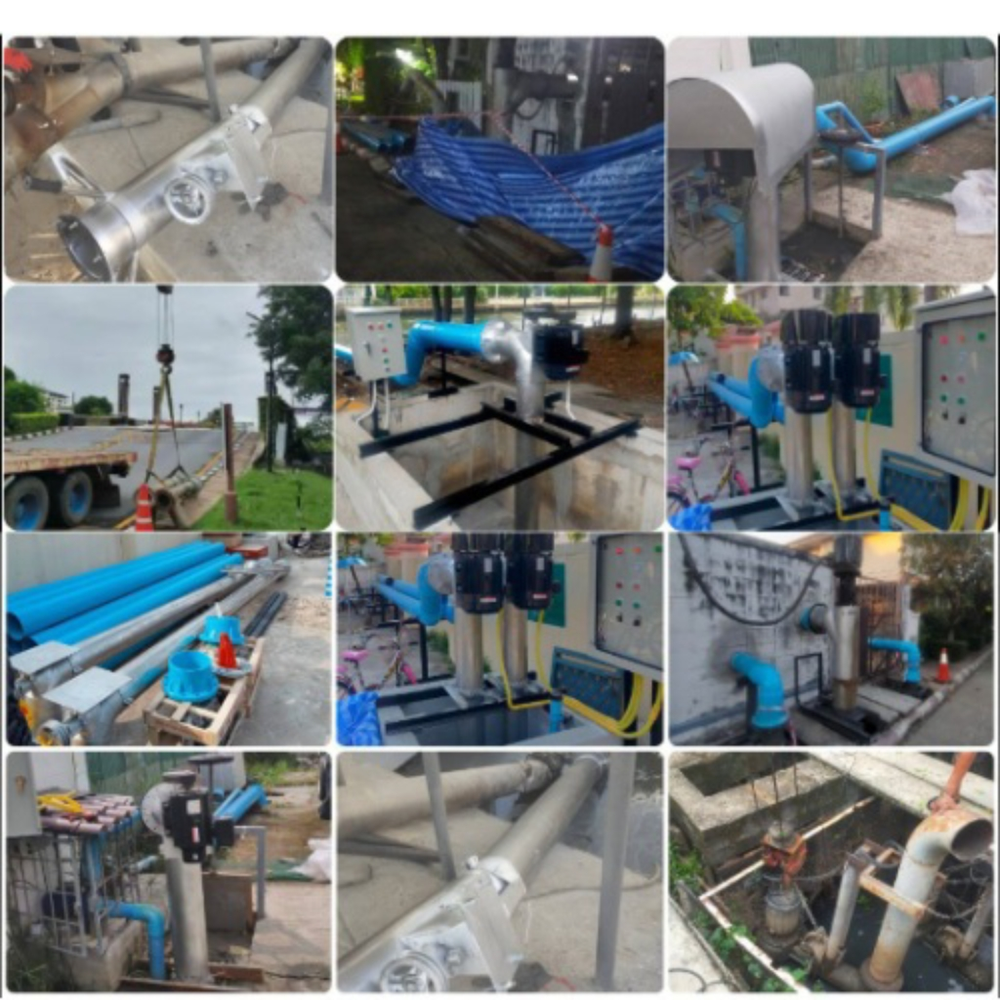
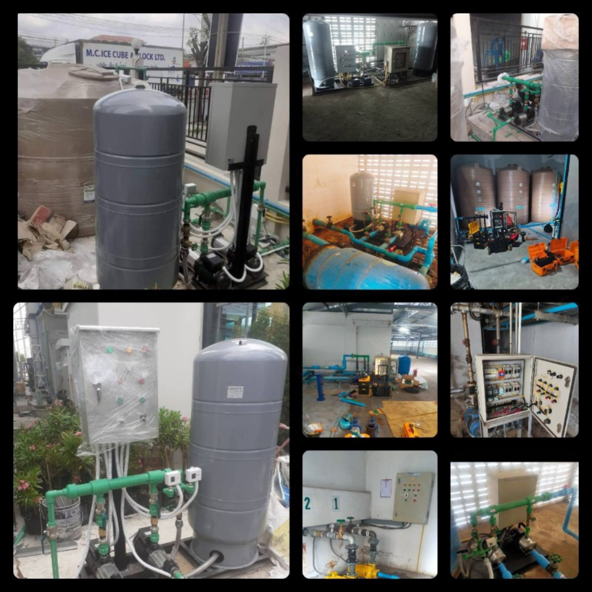
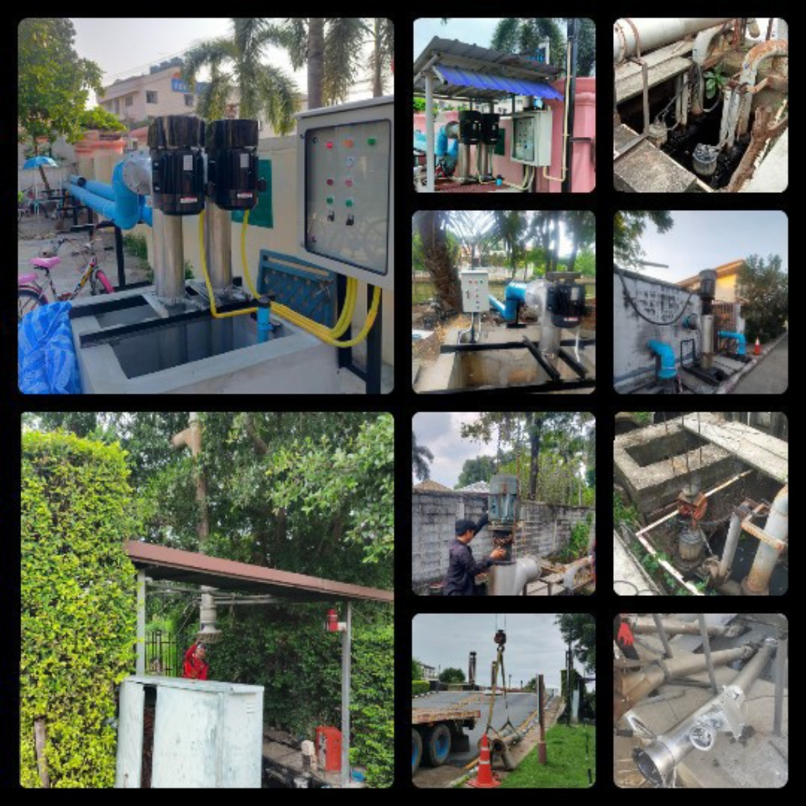
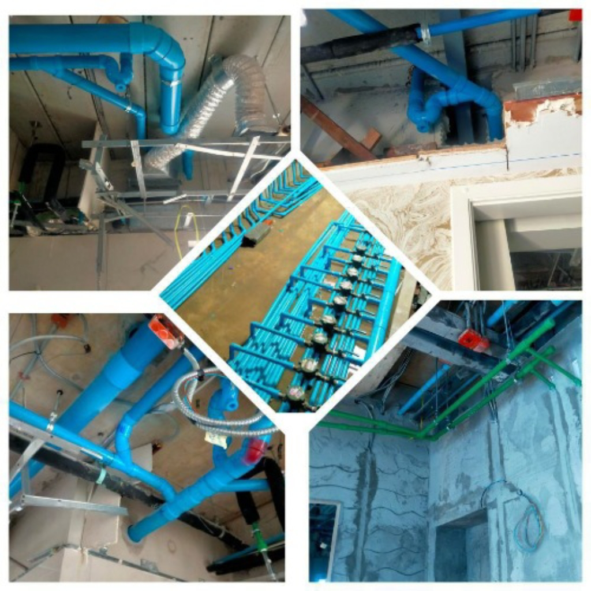
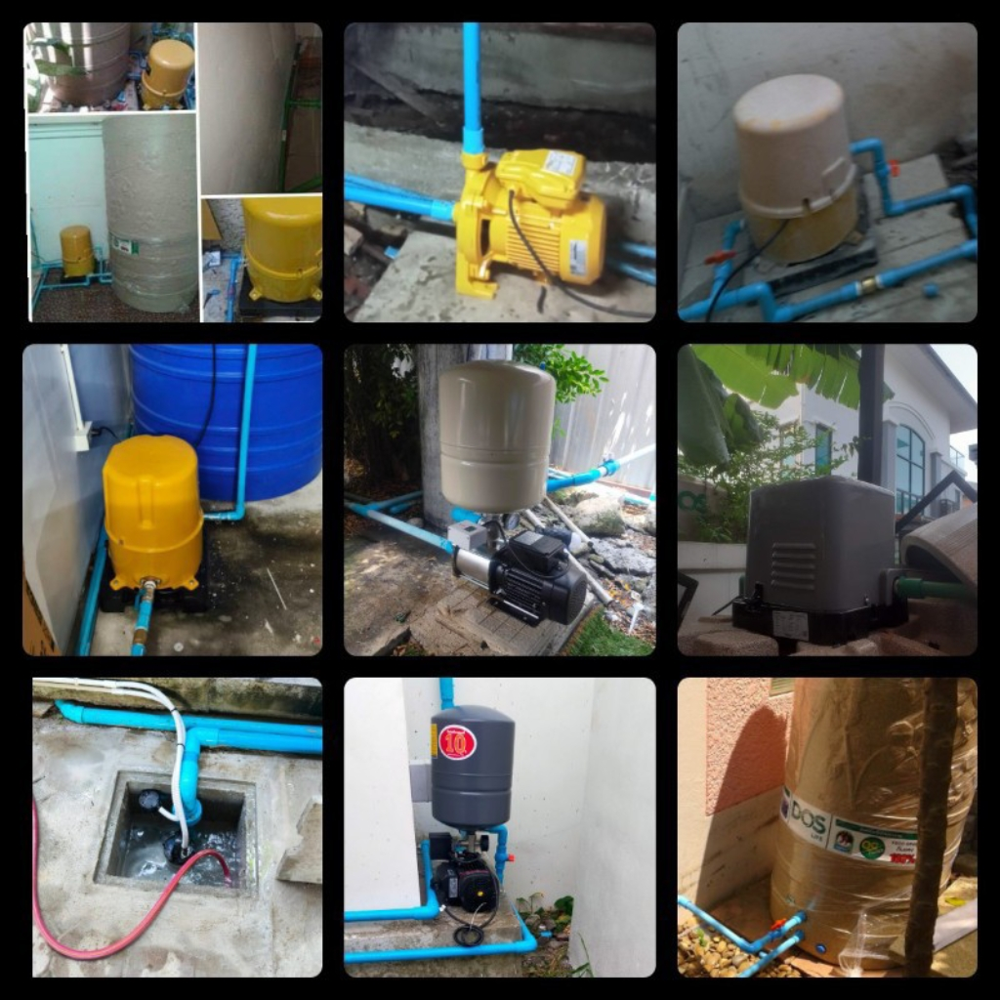
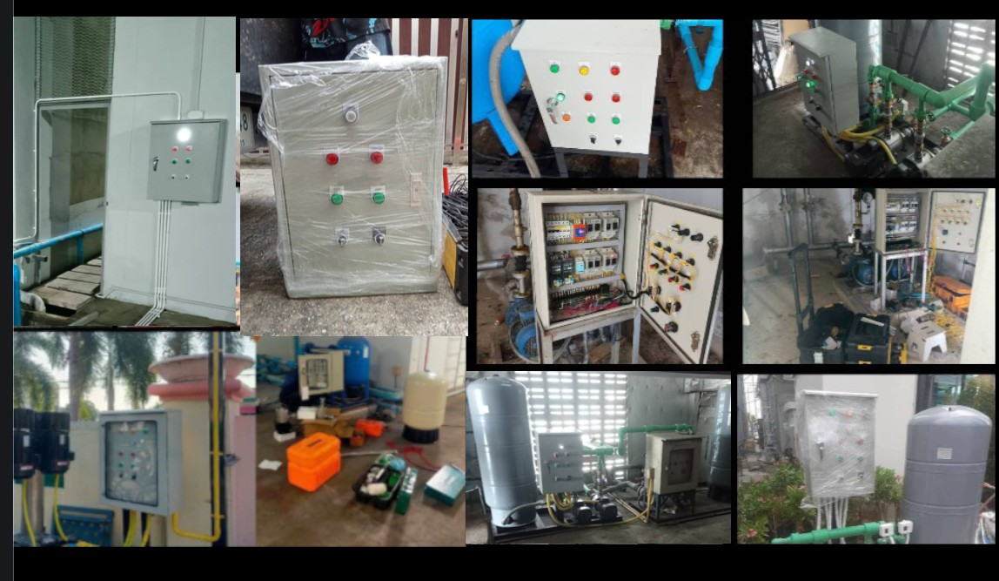
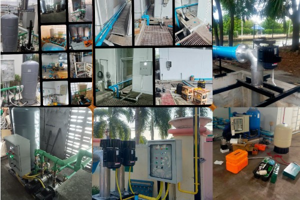
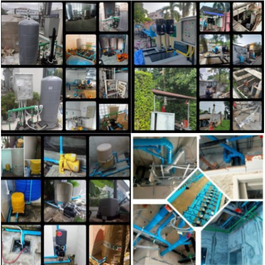

ช่างซ่อมและติดตั้งปั๊มน้ำ ปั๊มอาคารคอนโด บ้านพักอาศัย
ซ่อมและติดตั้งปั๊มน้ำ Booster Pump, Transfer Pump, ปั๊มจุ่ม, ไดโว่, ปั๊มสูบน้ำเสีย ตู้คอนโทรลปั๊มน้ำ สำหรับอาคาร คอนโด โรงงาน หมู่บ้าน และบ้านพักอาศัย

รายการงานซ่อมและติดตั้ง
🛠️ รับงานบริการซ่อมและติดตั้งปั๊มน้ำ อาคาร โรงงาน

- ปั๊มน้ำอาคาร, คอนโด, โรงงาน, บ้านพักอาศัย
- ซ่อมและติดตั้งปั๊มน้ำ(ระบบคอนโทรลปั๊มน้ำ)
- ระบบ Booster Pump (เปลี่ยนถังแรงดัน)
- ระบบ Transfer Pump (ปั๊มส่งน้ำขึ้นอาคาร)
🌊 ระบบสูบน้ำ & ปั๊มจุ่ม ไดโว่ ปั๊มพญานาคไฟฟ้า

- ปั๊มสูบน้ำ, ปั๊มจุ่ม, ไดโว่
- ปั๊มสูบน้ำเสียซ่อม (ระบบคอนโทรลปั๊มสูบน้ำ)
- ซ่อม ท่อสูบน้ำพญานาค หมู่บ้าน โรงงาน
🔧 งานระบบท่อประปา pvc, ppr

- เดินระบบท่อประปา PVC
- ติดตั้งและเชื่อมท่อ PPR (ท่อเชื่อมความร้อน)
- งานตู้คอนโทรลปั๊มน้ำ
- เดินระบบท่อประปา อาคาร โรงงาน และบ้านพักอาศัย
🏠 บริการซ่อมติดตั้งปั๊มน้ำบ้านพักอาศัย

- ช่างซ่อมปั๊มน้ำใกล้ฉัน ซ่อมปั๊มน้ำติดตั้งปั๊มน้ำ
- แก้ไขประปารั่วใต้พื้น
- เดินระบบท่อน้ำดีใหม่ และตรวจสอบระบบปั๊มน้ำ
⚙️️ งานซ่อมตู้คอนโทรลปั๊มน้ำ

- ตรวจเช็คระบบไฟ control ปั๊มน้ำ
- เปลี่ยนอะไหล่เฉพาะจุด
- บริการซ่อมระบบ control ปั๊มน้ำ
🏗️ งานติดตั้งวางระบบใหม่

- วางระบบปั๊มน้ำ อาคาร คอนโด โรงงาน และบ้านพักอาศัย
- คำนวณและวางระบบท่อประปาใหม่ทุกชนิด
- ออกแบบและประกอบตู้คอนโทรลปั๊มน้ำตามหน้างาน
- ตรวจสอบและทดสอบระบบน้ำก่อนส่งมอบงาน
เครือข่ายบริการ
❓ คำถามที่พบบ่อย (FAQ)
ปั๊มน้ำทำงานตัดต่อถี่ๆ สาเหตุ/วิธีแก้ไขเบื้องต้น?
ปั๊มบูสเตอร์ปั๊มและปั๊มที่มีถังแรงดันส่วนใหญ่เกิดจากแรงดันอากาศในถังแรงดันหมดอาจมีการรั่วซึมในระบบถังหรือยางไดอะแกรมข้างในแตกหรือมีรอยรั่ว (Waterlogged) ส่งผลให้เพรสเชอร์สวิตช์ตัดต่อการทำงานถี่ๆ ทุก 2-3 วินาทีหรือไม่มีใครใช้น้ำก็ทำงานเองแบบสั้นๆมีอาการกระตุกกระชากในระบบบูสเตอร์ปั๊มตู้คอนโทรลควรมีระบบ timer หน่วงระยะการทำงานหลังจาก pressureสั่งตัด(ในกรณีปั๊มน้ำบ้านที่ไม่มีถังแรงดัน)จะมีตัวเติมอากาศให้ลองซื้อมาเปลี่ยนก่อนตัวเติมอากาศกับ pressure switch ควรเปลี่ยนควบคู่กัน และควรใช้ค่าที่เป็นมาตรฐานของปั๊มในแต่ละวัตต์แต่ละรุ่น ถ้ายังไม่หายให้ลองตรวจสอบดูด้านบนของถังมีรอยรั่วซึมหรือเปล่า เพราะในระบบทางควรมีอากาศและน้ำปนกันอยู่
ปั๊มน้ำมีเสียงดังแต่ไม่หมุน วิธีแก้ไขเบื้องต้น?
มักเกิดจากมอเตอร์ทำงานรันตัวเปล่าเป็นเวลานานไม่มีน้ำวิ่งผ่านระบายความร้อนของตัวปั๊มเอง เป็นสาเหตุทำให้คาปาซิเตอร์ (Capacitor) เสื่อมสภาพ บางสาเหตุอาจเกิดจาก ใบพัดติดขัดเกิดจากสนิมหรือมีน้ำขังในช่วงวิกฤตน้ำท่วม วิธีแก้ไขเบื้องต้นปล่อยไว้ให้น้ำแห้งสัก 2-3 วัน หรือหาปั๊มลมหรือไดเป่าให้แห้งแล้วลองเสียบปลั๊กดู หากมีอาการมีเสียงมอเตอร์แต่มอเตอร์ไม่หมุน ให้นำไขควงแบนเสียบเข้าตรงตูดมอเตอร์จะมีร่องพอดีกับไขควงแบน แล้วปั่นช่วยมอเตอร์ดูว่าหมุนไหม ถ้าหมุนปกติแล้วชักปลั๊กออกแล้วเสียบใหม่ถ้าหมุนปกติก็คือใช้ได้อาจจะมีอาการติดขัดเล็กน้อย แต่ถ้าหมุนปกติแต่ดึงปลั๊กดูแล้วเสียบใหม่แล้วมอเตอร์ไม่หมุน แสดงว่าคาปาซิเตอร์เสียให้นำของเก่าไปเทียบซื้อตามค่าไมโครฟารัด(μF)นำมาเปลี่ยน หรือเรียกช่างที่มีความชำนาญจัดการเปลี่ยนให้ ถ้าลองตามนี้แล้วมอเตอร์ยังไม่หมุนบางอาการในปั๊มน้ำขนาดเล็กราคาซ่อมบางทีซื้อใหม่จะคุ้มค่ากว่า
ให้บริการตรวจเช็กและซ่อมในพื้นที่ใดบ้าง?
(Locations / Service Areas)ให้บริการบริเวณพื้นที่กรุงเทพมหานครฝั่งตะวันออก และจังหวัดสมุทรปราการ บางนา ประเวศ อุดมสุข ลาซาล แบริ่ง อ่อนนุช สวนหลวง พัฒนาการ กรุงเทพฯกรีฑา คลองตัน สุขุมวิท ศรีนครินทร์ ลาดกระบัง บางจาก วัฒนา เอกมัย พระโขนง กิ่งแก้ว สำโรง ราชาเทวะ ราม 2 บางแก้ว หนามแดง บางพลี จังหวัดสมุทรปราการ & พื้นที่ใกล้เคียง โทรสอบถามเรียกช่างเข้าประเมินหน้างานมีค่าบริการเบื้องต้นสอบถามคุยกันภาษาคน
📸 งานที่ทำเบื้องต้น / ภาพผลงาน

📍 พื้นที่ให้บริการ (Locations / Service Areas)
ให้บริการเขตกรุงเทพฯฝั่งตะวันออก จังหวัดสมุทรปราการ & พื้นที่ใกล้เคียง โทรติดต่อสอบถามได้ครับ โทร 082-712-7490
บางนาประเวศอุดมสุขลาซาลแบริ่งอ่อนนุชสวนหลวงพัฒนาการกรุงเทพฯกรีฑาคลองตันสุขุมวิทศรีนครินทร์ลาดกระบังบางจากวัฒนาเอกมัยพระโขนงกิ่งแก้วสำโรงราชาเทวะราม 2บางแก้วหนามแดงบางพลีกรุงเทพฯฝั่งตะวันออกจังหวัดสมุทรปราการ
ช่างซ่อมปั๊มน้ำ พื้นที่ให้บริการ • ช่างปั๊มน้ำบางนา • ช่างปั๊มน้ำประเวศ • ช่างปั๊มน้ำอุดมสุข • ช่างปั๊มน้ำลาซาล • ช่างปั๊มน้ำแบริ่ง • ช่างปั๊มน้ำอ่อนนุช • ช่างปั๊มน้ำสวนหลวง • ช่างปั๊มน้ำพัฒนาการ • ช่างปั๊มน้ำกรุงเทพฯกรีฑา • ช่างปั๊มน้ำคลองตัน • ช่างปั๊มน้ำสุขุมวิท • ช่างปั๊มน้ำศรีนครินทร์
เว็บไซต์หลัก www.ksservice89.com
ช่างปั๊มน้ำลาดกระบัง • ช่างปั๊มน้ำบางจาก • ช่างปั๊มน้ำวัฒนา • ช่างปั๊มน้ำเอกมัย • ช่างปั๊มน้ำพระโขนง • ช่างปั๊มน้ำกิ่งแก้ว • ช่างปั๊มน้ำสำโรง • ช่างปั๊มน้ำราชาเทวะ • ช่างปั๊มน้ำราม 2 • ช่างปั๊มน้ำบางแก้ว • ช่างปั๊มน้ำหนามแดง • ช่างปั๊มน้ำบางพลี • ช่างปั๊มน้ำสมุทรปราการ • ช่างซ่อมปั๊มน้ำใกล้ฉัน กรุงเทพฝั่งตะวันออกฯ สมุทรปราการ